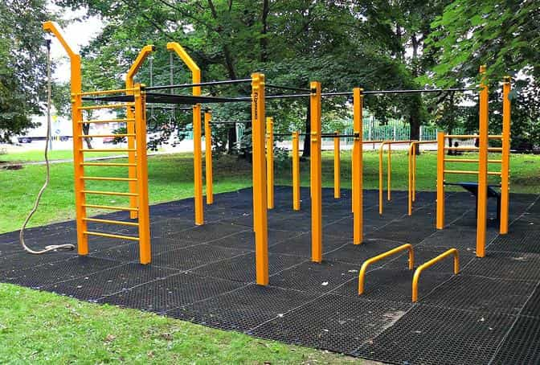

Whenever lifestyle optimization or something similar comes into question, the tips typically include cost-reducing hacks such as to buy things on a discount or do something potentially constructive but with low cost.
However, I would like to take this a step further and show how a man can do something constructive which costs absolutely nothing. The Chinese Tao philosophy has a saying, wu wei, which means non-action and I think there might be some truth in it. Sometimes it is better to do nothing. Still I think that we can have our own more appropriate Western version of this aphorism: action without paying (and I am not referring to sex). Say no to consumerism but still cultivate ourselves.
1. Outdoor gym exercising
I would typically argue that gym membership is a great investment and once you have paid the fee, usually monthly via an automatic payment service these days, you can go there as much as you like. Personally I hit the iron six times a week, on average, and my membership is not even particularly expensive. For the sake of the argument, though, one can try an outdoor gym as long as temperatures exceed 10 degrees Celsius.
Most exercises for the entire body can be done and some of them, like pull-ups, dips and various abs exercises, are really demanding even for the fitness enthusiast. For most men an outdoor gym and what it offers is more than enough.

2. Speedwalking, jogging or running
Speed-walking is an excellent, non-costly way, to get some—hopefully—clean air, burn calories, and watch the surroundings. Likely also listen to some pleasant music in the meantime.
Although I am not particularly fond of long-distance running, to tackle shorter distances are great for fat loss, health and increasing VO2 max, especially during spring and summer (Scandinavia is dark and cold between October and March). And it costs absolutely nil.
)
3. (Intermittent) Fasting
Obviously you got to eat, but to fast about 16 hours has a lot of health benefits for normal people. Perhaps this is a bit hard for working people but once you have got used to it, it can work even in general.
I think that especially during weekends this is a great hack to reduce costs while staying healthy. Instead of spending money, you save money, and you will be healthy in the process. Look for cheap protein sources and vegetables.

4. Visit the public library or read online
Besides from the potential aesthetics benefits, visiting the local public library and borrowing a good book on a subject that you are interested in is an excellent way to cultivate yourself while spending nada.
In case you prefer to read in front of a computer screen, there are hundreds of free articles and e-books online. Perhaps you may have missed some earlier ROK articles between 2012-2017 (now exceeding 5,000). There is always a new angle to self-improvement, politics, and how bad Western women are under current conditions that you haven’t come across yet.

5. Prayer or meditation
Spirituality is often a private matter, but regardless of your specific beliefs, you may understand that to pray or meditate for as little as 15 minutes a day can reduce stress and anxiety. If you are Christian of some sort you already know the praying drill and how it helps you.
6. Talk to someone important
Regardless of how much you value your individual space and free time, it is a balance, and there is often more room to meet and talk to someone important. Whenever I let go of the individual projects and pastimes, I tend to realize how much conversations matter. Even with those that I think is a bit boring, or at least are not longing for to meet (like my girlfriends’ dad). Sure it can be combined with dining and drinking, but might be as good without it.
7. Practice your conversation ability
Some practice cold approach game and some do not. Some are really good conversationalists and some are not. Many are somewhere in between. The thing is that you are never too good and there is always room for improvement. The goal should be to conversate, not just respond, something explained further earlier on these pages.
The worst thing that could happen is that those you meet are less sanguine about your newly found verbosity, and the best things could indeed be really good for you.

In closing
Whether you see these merely as temporary hacks to save money in order to afford something particular, become a little more well-informed, or truly identify with the power of minimalism and anti-consumerist ways of living, these are all constructive things that will do both your mind and wallet good.
If you want to read more of William Adams’ material, check out his website Syncretic Politics.
Read More: 10 Things To Do On Sundays That Are Better Than Watching The NFL